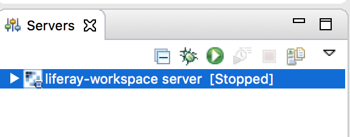
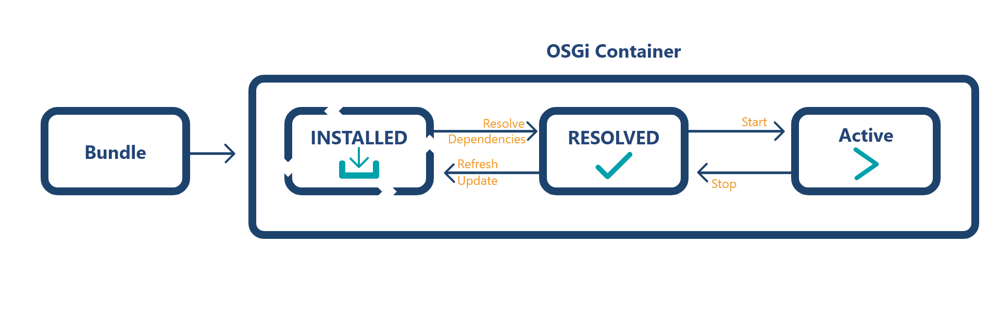

Install Liferay Developer Tools
In order to follow the exercise in the video, you’ll need to install the following:
In order to follow the exercise in the video, you’ll need to install the following:
For the first demonstration, we’ll create three projects:
As we want to be as simple as possible, we’ll stick with the most basic components. Liferay comes with a shell, called Gogo Shell. The Gogo Shell allows us to interact with the OSGi container and execute the client we are creating to run our service.
To start, we’ll create a simple API using the wizards provided by Liferay Developer Studio.
Open Liferay Developer StudioLiferay Module Project“helloworld-api”Project Template Name, select “api” from the drop downNextHelloServicecom.liferay.university.hello.apiFinishHelloService.javahello method signature belowpackage com.liferay.university.hello.api;
public interface HelloService {
String hello(String parameter);
}Liferay Developer Studio, along with Liferay Workspace, will create a proper project structure for you, including the following bnd.bnd file:
Bundle-Name: helloworld-api
Bundle-SymbolicName: com.liferay.university.hello.api
Bundle-Version: 1.0.0
Export-Package: com.liferay.university.hello.apiWhen this project is built, we’ll have a bundle that we can deploy to any OSGi container. Let's start Liferay within Liferay Developer Studio and use the OSGi container that is embedded into Liferay.

g! lb helloworld
START LEVEL 20
ID|State |Level|Name
590|Active | 1|helloworld-api (1.0.0)Now create a second project with the service implementation.
service project in Liferay Developer Studio.helloworld-serviceWhen the project is created, take a look at the HelloServiceImpl class:
package com.liferay.university.hello.impl;
import com.liferay.university.hello.api.HelloService;
import org.osgi.service.component.annotations.Component;
@Component
public class HelloServiceImpl implements HelloService {
@Override
public String hello(String parameter) {
return parameter;
}
}Notice that the class “HelloService” is showing up as unresolved. To fix this, let’s import our interface.
The gradle implementation in Liferay Workspace makes other modules from the same workspace easily available.
compileOnly project(":modules:helloworld-api")The resulting project will automatically deploy to Liferay, ending up with both of our projects being available:
g! lb helloworld
START LEVEL 20
ID|State |Level|Name
590|Active | 1|helloworld-api (1.0.0)
591|Active | 1|helloworld-service (1.0.0)To call the service, let’s build a quick and dirty Gogo-Shell command that utilizes our service:
Note: This bundle will also depend on helloworld-api, just like the service implementation. Add the same dependency as above to build.gradle.Next, let’s call the relevant HelloService implementation and display the results in Gogo Shell.
package com.liferay.university.command;
import com.liferay.university.hello.api.HelloService;
import org.osgi.service.component.annotations.Component;
import org.osgi.service.component.annotations.Reference;
@Component(
immediate=true,
service = Object.class,
property = {
"osgi.command.function=say",
"osgi.command.scope=custom"
}
)
public class HelloWorldCommand {
public void say(String what) {
System.out.println(helloService.hello(what));
}
@Reference
private HelloService helloService;
}The @Component declaration will make sure that we can easily use this class as a command in Gogo Shell. Let’s try this: On Gogo Shell, validate that your service is deployed and active:
Let’s try this: Validate that your service is deployed and active in Gogo Shell:
g! lb helloworld
START LEVEL 20
ID|State |Level|Name
590|Active | 1|helloworld-api (1.0.0)
591|Active | 1|helloworld-service (1.0.0)
592|Active | 1|helloworld-command (1.0.0)Now type:
g! say hello
helloCongratulations, your first and simplest possible OSGi Declarative Service.
Let’s use this simple code for further experimentation with Gogo Shell and mess with the runtime. Note: Replace “591” with the ID for your service from Gogo Shell.
g! stop 591
g! say hello
gogo: CommandNotFoundException: Command not found: sayg! lb helloworld
START LEVEL 20
ID|State |Level|Name
590|Active | 1|helloworld-api (1.0.0)
591|Resolved | 1|helloworld-service (1.0.0)
592|Resolved | 1|helloworld-command (1.0.0)The helloworld-command service has a dependency on “helloworld-service” that is no longer satisfied. Thus, the OSGi runtime has not only stopped the service implementation, but also the helloworld-command service.
Next, start the helloworld-service bundle again and see if helloworld-command is restarted as well.
This brings us to the lifecycle of an OSGi bundle. As soon as you have deployed a bundle into an OSGi runtime, the runtime will attempt to resolve all available dependencies:

Let’s keep things simple with this first exercise, and make it more interesting in the next exercise. We’ll introduce a second implementation for our API and see if the new deployment meets your expectations.